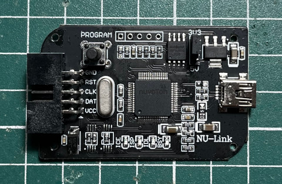

參考資訊：
https://github.com/jdelphi/nuvoprog2
https://github.com/erincandescent/libn76
https://github.com/erincandescent/nuvoprog
https://cmheong.blogspot.com/2020/07/flashed-before-my-eyes-nuvoton-76n003.html
編譯器使用SDCC
$ sudo apt-get install sdcc -y
燒錄器使用Nu-Link

$ cd
$ git clone https://github.com/erincandescent/nuvoprog
$ cd nuvoprog
$ go mod init main
$ go mod tidy
$ go build -o nuvoprog main.go
$ nuvoprog -h
A tool for programming Nuvoton devices, particularly
focusing on their modern 8051 family
複製N76E003檔頭
$ cd $ git clone https://github.com/erincandescent/libn76 $ sudo cp libn76/include/n76e003.h /usr/share/sdcc/include/mcs51/